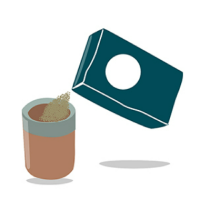
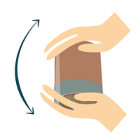
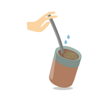
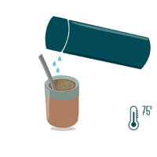
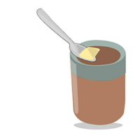
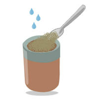
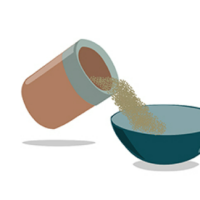

TIPS #DEMATEROS
CÓMO PREPARAR UN BUEN MATE
APRENDÉ A PREPARAR EL MATE PERFECTO SIGUIENDO ESTOS PASOS




- Llená las tres cuartas partes del mate con tu yerba
- Invertí el mate, tapalo con la palma de la mano y agitalo ligeramente. Inclinalo para acumular la yerba en uno de sus lados.
- Humedecé la yerba con una pequeña cantidad de agua tibia y colocá la bombilla.
- Cebá los mates con agua entre 70ºC y 80ºC sobre la yerba cercana a la bombilla, dejando siempre parte de la yerba seca.
CÓMO CURAR TU MATE DE MADERA
ES IMPORTANTE CURAR TU MATE DE MADERA PARA EVITAR QUE SE AGRIETE O PIERDA



- Untá hasta la boca del mate con aceite o manteca. TIP: La manteca le da más sabor a la madera
- Llená a tope con yerba usada y andá humedeciendo durante el día, con pequeñas cantidades de agua. TIP: humedecé, no llenes de agua.
- Después de 24hs, retirá y enjuagá.TIP: si queda un poco de manteca no pasa nada, eso hace que se termine de sellar.